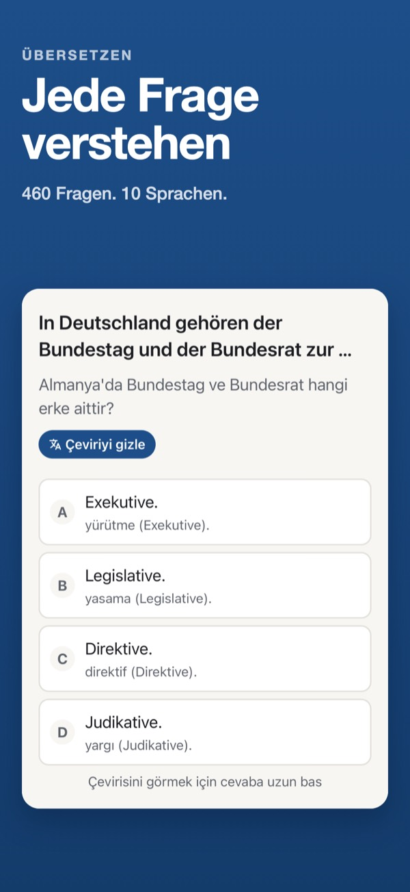
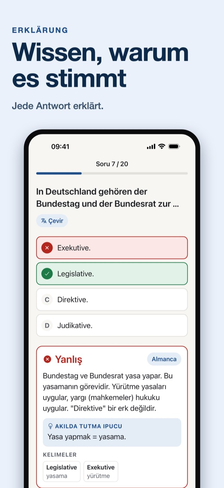
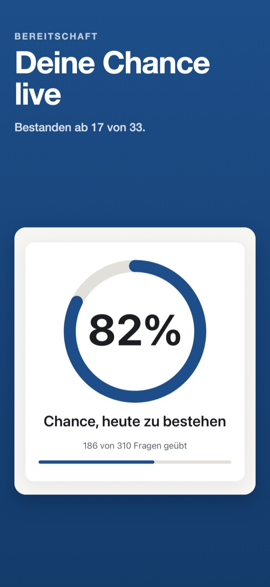
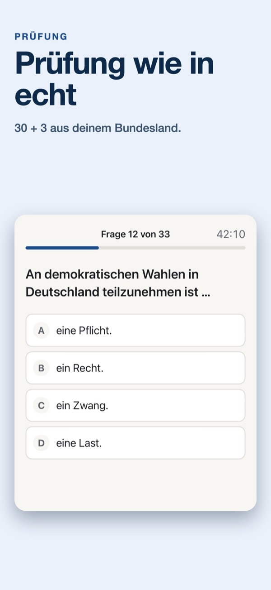
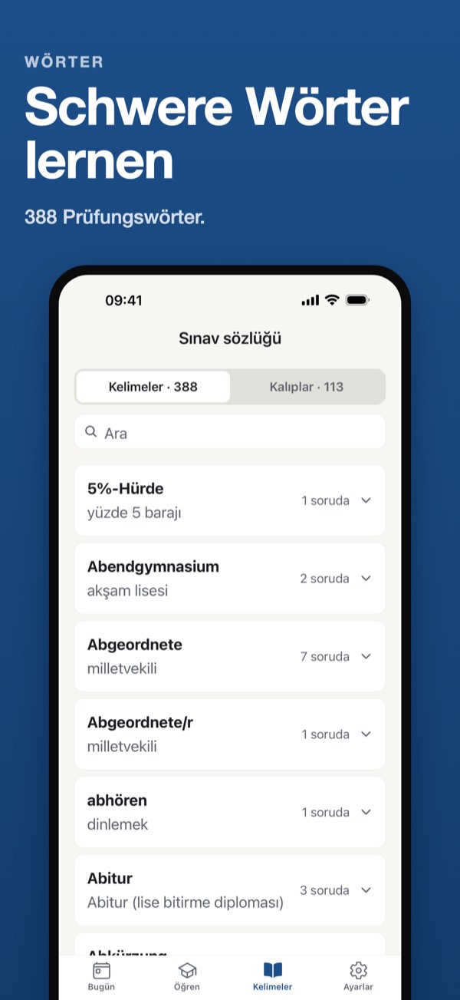
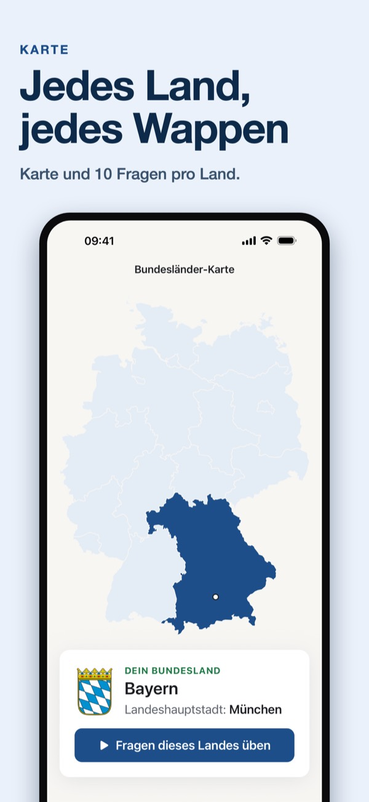
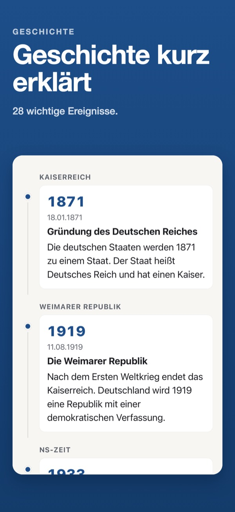
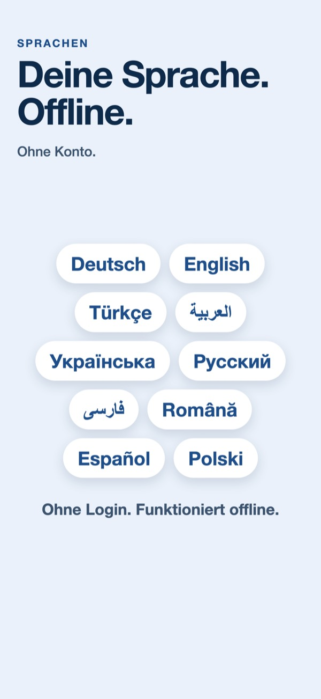

Problem
460 Fragen in einer Fremdsprache.
Der Fragenkatalog ist auf Deutsch, die Prüfung auch. Ohne Übersetzung und ohne Erklärung bleibt nur Raten oder stures Wiederholen.
Die Prüfung ist auf Deutsch. Der Einbürgerungstest 2027 Trainer zeigt dir deshalb immer die deutsche Frage und übersetzt sie mit einem Tipp in deine Sprache. Nach jeder Antwort liest du, warum sie richtig ist und warum die anderen falsch sind. Und du siehst in Prozent, wie gut du vorbereitet bist.
Wörter wie „Legislative“, „Stimmzettel“ oder „5%-Hürde“ stehen in keinem Alltagswörterbuch ganz vorne. Wer sie nur als Buchstabenfolge lernt, erkennt die Frage in der Prüfung oft nicht wieder.
Der Fragenkatalog ist auf Deutsch, die Prüfung auch. Ohne Übersetzung und ohne Erklärung bleibt nur Raten oder stures Wiederholen.
Die deutsche Frage bleibt immer sichtbar. Die Übersetzung kommt dazu, wenn du sie brauchst. Die Erklärung zeigt, warum die Antwort stimmt.
Drei Dinge zuerst: verstehen, wissen warum, deine Chance sehen.
Die Beispiele zeigen die Übersetzung auf Türkisch. In der App wählst du eine von 10 Sprachen.








Der Gesamtfragenkatalog des BAMF hat 460 Fragen: 300 allgemeine und 10 für jedes der 16 Bundesländer. Für dich zählen 310 davon.
30 allgemeine Fragen und 3 Fragen aus deinem Bundesland.
Ab 17 richtigen Antworten von 33 hast du bestanden.
Fragen und Antworten stehen in der Prüfung nur auf Deutsch. Übersetzungen sind Lernhilfen.
Frage, Antworten und Erklärung gibt es auf Deutsch, Englisch, Türkisch, Arabisch, Ukrainisch, Russisch, Persisch/Dari, Rumänisch, Spanisch und Polnisch. Die deutsche Frage bleibt dabei immer sichtbar, weil du sie in der Prüfung genau so liest.
Keine Anmeldung, kein Konto. Alle Fragen, Erklärungen und Übersetzungen sind in der App enthalten und funktionieren ohne Internet. Dein Lernfortschritt wird auf deinem Gerät gespeichert; die App lädt ihn nicht zu uns hoch. Details stehen in der Datenschutzerklärung.
Lernen ist kostenlos. Premium Lifetime kaufst du einmal, ohne Abo.
0 €
4,99 € einmalig, in Deutschland
Premium Lifetime ist ein einmaliger Kauf über den App Store. Er verlängert sich nicht und wird nicht erneut berechnet. Der Preis wird vor dem Kauf in deiner Währung angezeigt und kann je nach Land abweichen.
Die Prüfung hat 33 Fragen: 30 allgemeine Fragen und 3 Fragen zu deinem Bundesland. Sie stammen aus dem öffentlichen Gesamtfragenkatalog des BAMF mit 460 Fragen: 300 allgemeine und 10 für jedes der 16 Bundesländer. Für dich sind also 310 Fragen wichtig.
Du bestehst den Einbürgerungstest ab 17 richtigen Antworten von 33.
Nein. Die Prüfung selbst gibt es nur auf Deutsch. Die App zeigt deshalb immer die deutsche Frage. Zum Lernen kannst du Frage, Antworten und Erklärung übersetzen: Deutsch, Englisch, Türkisch, Arabisch, Ukrainisch, Russisch, Persisch/Dari, Rumänisch, Spanisch und Polnisch.
Ja. Die App bereitet auf den Einbürgerungstest und auf den Test „Leben in Deutschland“ vor.
Nein. Es gibt kein Konto und keine Anmeldung. Dein Lernfortschritt wird auf deinem Gerät gespeichert.
Ja. Alle Fragen, Erklärungen und Übersetzungen sind in der App enthalten und funktionieren ohne Internet.
Alle Fragen, Erklärungen, Übersetzungen, Lektionen und das Wörterbuch sind kostenlos, dazu 1 abgeschlossene Probeprüfung pro Tag. Premium Lifetime ist ein einmaliger Kauf für 4,99 € in Deutschland, kein Abo. Er schaltet unbegrenzte Probeprüfungen, Zeitleiste, Karte und Karteikarten frei.
Nein. Die App ist ein unabhängiges Lernangebot und hat keine Verbindung zum BAMF oder zu einer Behörde. Die Fragen basieren auf dem öffentlichen Gesamtfragenkatalog des BAMF. In der Prüfung gilt der deutsche Text.
Einbürgerungstest 2027 Trainer prepares you for the German citizenship test (Einbürgerungstest) and the Leben in Deutschland test. The exam is in German, so the app always shows the German question and adds a one-tap translation in 10 languages: German, English, Turkish, Arabic, Ukrainian, Russian, Persian/Dari, Romanian, Spanish and Polish. Every answer comes with an explanation of why it is right and why the others are wrong.
Independent study aid, not affiliated with the BAMF or any authority. Questions are based on the public BAMF question catalog. The exam uses the German text.
Unabhängiges Lernangebot, keine Verbindung zum BAMF oder zu einer Behörde. Die Fragen basieren auf dem öffentlichen Gesamtfragenkatalog des BAMF. In der Prüfung gilt der deutsche Text.